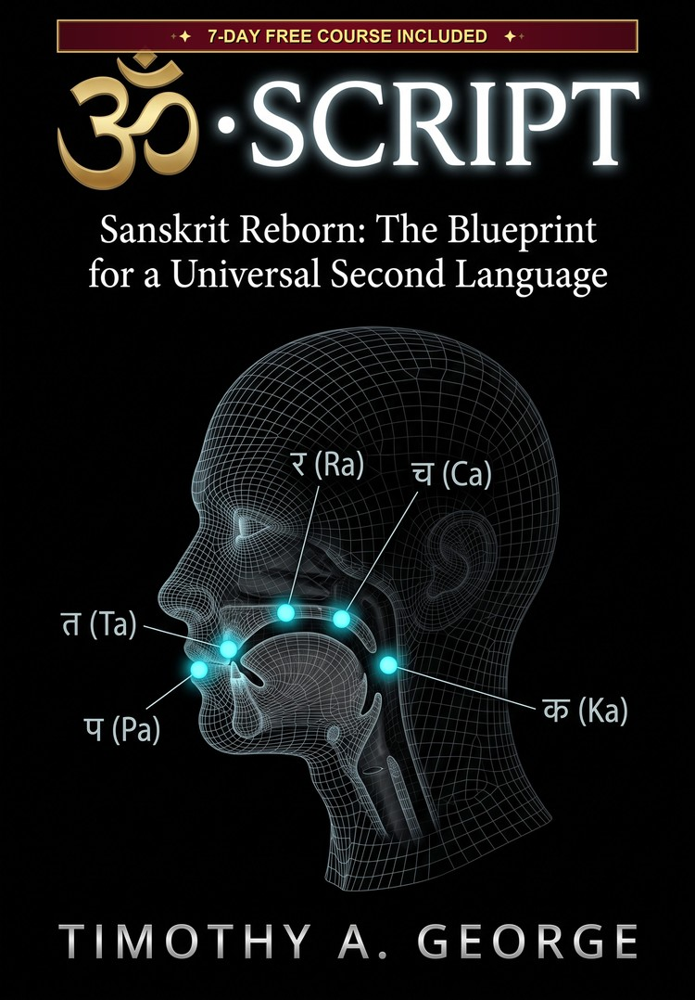

The Blueprint for a Universal Second Language by Timothy A. George. An engineered cognitive operating system featuring the Two-Track Architecture, Rule 8 Sandhi-Free Grammar, and 7-Tag Spatial Physics.

Every natural language in human history suffers from the same fatal flaw: breath corrupts meaning. In English, French, and classical Sanskrit, words fuse together phonetically, destroying morphemic boundaries and leading to ambiguous interpretations.
ॐ-Script decouples human speech into two completely independent, parallel tracks:
Maintains absolute semantic parity. Nouns are bound to 8 immutable Kāraka clitics (·ḥ, ·ṃ, ·bhiḥ). Verb roots never mutate. The computer parses Track 1 without ambiguity.
Governs human breath, vocal cadence, and oratorical pacing. Markers like ATHA (inhale/start), OM (focus threshold), and SVĀHĀ (complete exhale/closure) ensure natural rhythmic speech.
In Classical Sanskrit, when words meet, their boundary vowels and consonants mutate through hundreds of phonetic Sandhi rules. A student or computer must perform complex backtracking to de-sandhi the sentence:
tathāgato'bravīdrājan — 3 separate words fused into a single mutated stream. The subject and verb boundaries are obscured.
Every morpheme remains 100% discrete. Token-level parsing is O(1) instantaneous with zero hallucination.
Click registers below to dynamically add Kāraka arguments into the sentence envelope. Notice how role clarity is preserved regardless of ordering:
In Chapter 13 of Book 2, the exact same 7-tag spatial physics engine is deployed to translate foundational world scriptures without loss of theological or grammatical precision: